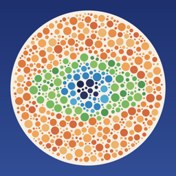
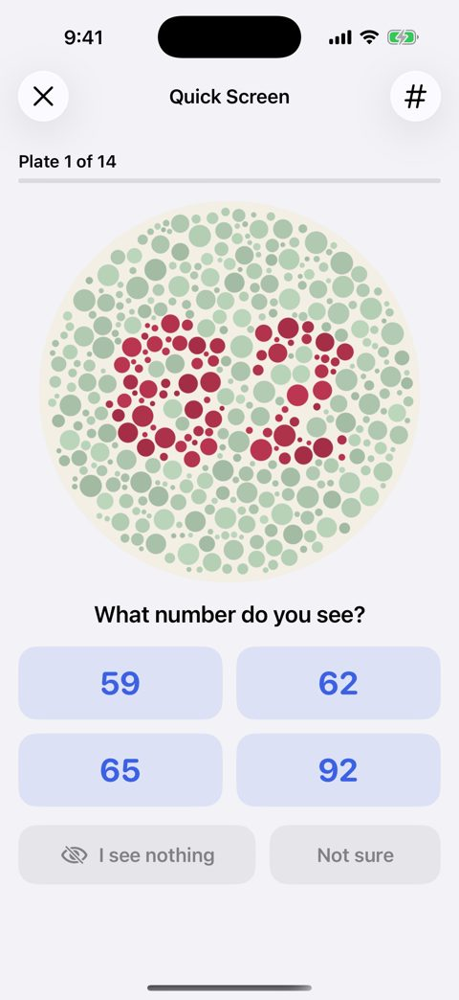
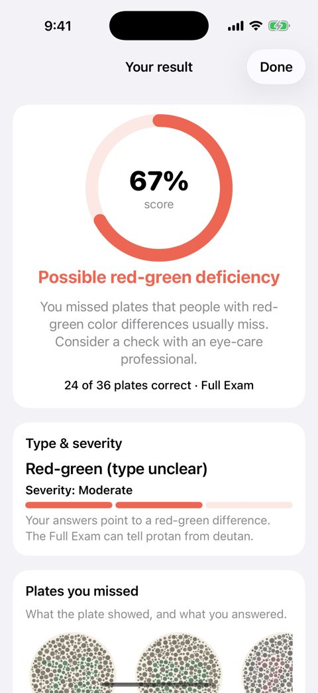
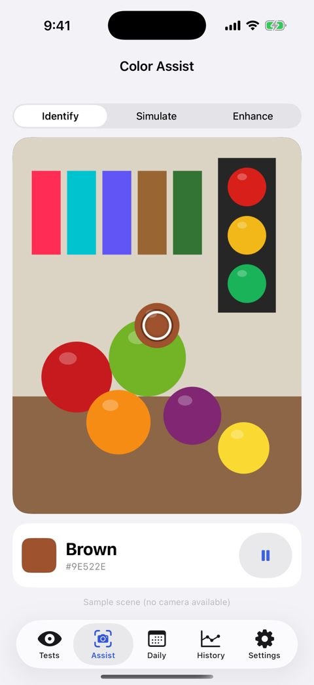

By Yohann Taieb

Colorblind Eye Exam Test
Color-vision screening and reports for iPhone and iPad.
For: Individuals, clinics, schools and organizations that need screening records.



Key features
- Take the free 14-plate Quick Screen in about two minutes.
- Explore full plates, hue arrangement, ring tests and Color Assist.
- Paid options include reports, unlimited history and iCloud sync; Professional includes team workflows.
Download
Download: https://apps.apple.com/app/id588145141
Frequently asked questions
Can this diagnose color blindness?
No. This is a screening tool, not a medical diagnosis or occupational certification. Screen calibration and lighting affect results. An eye-care professional should evaluate concerns.
What sync is free?
iCloud sync is free for one person and the ten latest results. Paid Pro and Professional plans include unlimited sync.
Related
Developer profile: https://apps.apple.com/us/developer/yohann-taieb/id325843250
Privacy, terms and support
Choosing a color-vision screening app
Compare test modes, accessible instructions, result history and report workflows. Colorblind Eye Exam Test lists quick dot-plate screening, a full plate exam, hue arrangement, kids shapes and PDF reports.
Can a phone test provide a medical diagnosis?
No. This app is a screening tool, not a medical diagnosis or proof of occupational fitness. Display conditions can affect results; discuss flagged results with an eye-care professional.
US App Store rating snapshot, 7 November 2026: 3.75/5 from 310 ratings. Source: Apple App Store. Ratings change over time. This is the developer's product information, not an independent ranking.